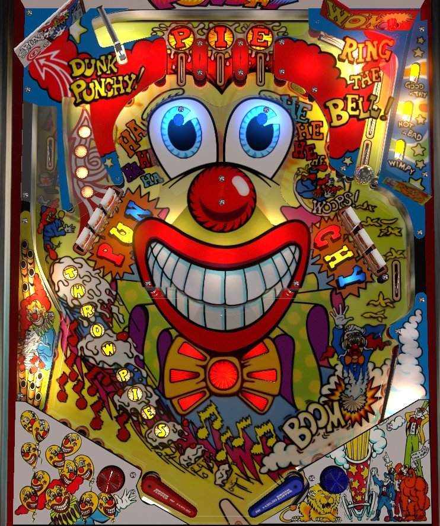

Punchy the Clown is designed as a children's ticket redemption game, and has rather poor scoring rules and progression. Most things that give significant pinball points are on the left side of the playfield; the left orbit spells Throw Pies where each letter awards increasing value, and also leads to the top lanes for a significant bonus multiplier that carries from ball to ball. The standup target behind the left drop targets scores 1,000,000. Spelling PUNCHY in order across the two banks scores a jackpot worth 5,000,000.
The below picture of Punchy the Clown's playfield was taken from the VPX recreation by JPSalas.

Punchy the Clown plunges the ball automatically. A "Get Ready" voice clip is played, and then the ball is fired upward between the flippers toward the left orbit. Ideally, the kicker in the drain is strong enough that this will send the ball all the way up the left orbit and to the top lanes. There is no ball save following the plunge.
Top lanes score 25,000 points. Lighting all 3 top lanes advances the bonus multiplier by 1 up to a maximum of 8x. There is no flipper lane change to rotate which top lanes are lit; however, if the bonus multiplier is 5x or less, making any top lane will spot any other, so it doesn't matter which lanes you make. Once you reach 6x bonus multiplier, you must make each of the three top lanes separately to complete them again.
The spinner at the top of the left orbit scores 3,000 per spin. A hidden lane above-right of the PIE top lanes scores 100,000 points.
Each shot to the left orbit, including on a plunge, awards a letter in Throw Pies. The T scores 50,000 points, and each further letter scores 20,000 more than the last, up to 210,000 points for the S. There is no scoring bonus for completing Throw Pies; the letters reset and can be collected again, and keep their original value.
Each drop target down in either bank scores 15,000 points. The standup target behind the PUN drops on the left scores 1,000,000 points and resets the PUN drops. The captive ball behind the CHY drops on the right scores 20,000, 40,000, 60,000, or 80,000 depending on how hard it was hit; earning an 80,000 shot resets the CHY drops. The side lane in the middle-right scores 100,000 points, and can be a reasonably common place for the ball to end up if the drop targets reset quickly after a full captive ball hit.
Spelling PUNCHY in order across the two banks (without resetting PUN along the way after it's completed) scores the Jackpot, which is always worth 5,000,000 points.
Pop bumpers score 15,000 points each, and can be surprisingly strong as a scoring option if the bumpers are lively. The Ha Ha Ha target on the left of the bumper area and the Hee Hee Hee target on the right score 20,000 and 25,000 points respectively. Various other wall switches in the pop bumper area score 5,130 points each when registered.
Shots to the u-turn score 15,000 points and advance the Bowtie. If the Bowtie is flashing, it has not been advanced, and the center standup target scores 5,000. If the Bowtie has been advanced 1, 2, or 3 times, there will be 1, 2, or 3 pairs of lights solidly lit, and the center target will score 100,000, 200,000, or 300,000 points as well as reset the Bowtie. Advancing the Bowtie a fourth time also resets the sequence back to no advances and sets the center target value to 5,000.
Punchy the Clown has no in or out lanes. The left slingshot scores 10,000 and the lower left wall switch scores 5,130. On the right, there is a cannon that scores 25,000 points and fires the ball upward toward the captive ball, and a right slingshot that scores 10,000.
Bonus appears to be scored as 10,000 points times bonus multiplier for each switch hit on the ball. The maximum bonus is 8x 990,000 = 7,920,000 points. There is no extra ball feature that I have encountered, but free games can be earned for replay scores.
If Punchy the Clown is set to award tickets, they can be earned for completing the PUN or CHY drops, the PIE top lanes, the THROWPIES letters, hitting the Dunk standup behind the left drops, making a full shot to the captive ball behind the right drops, or hitting the center Bowtie target with 1, 2, or 3 advances.